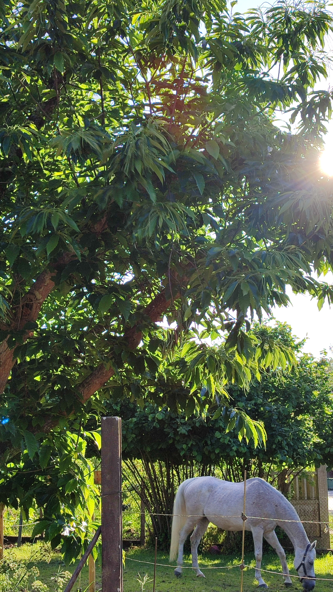
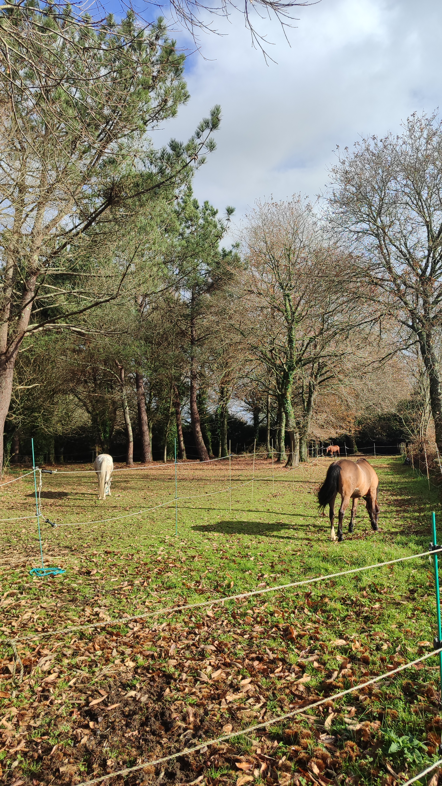
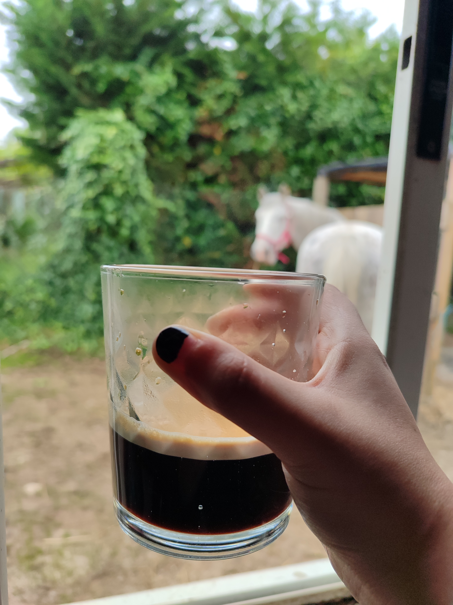
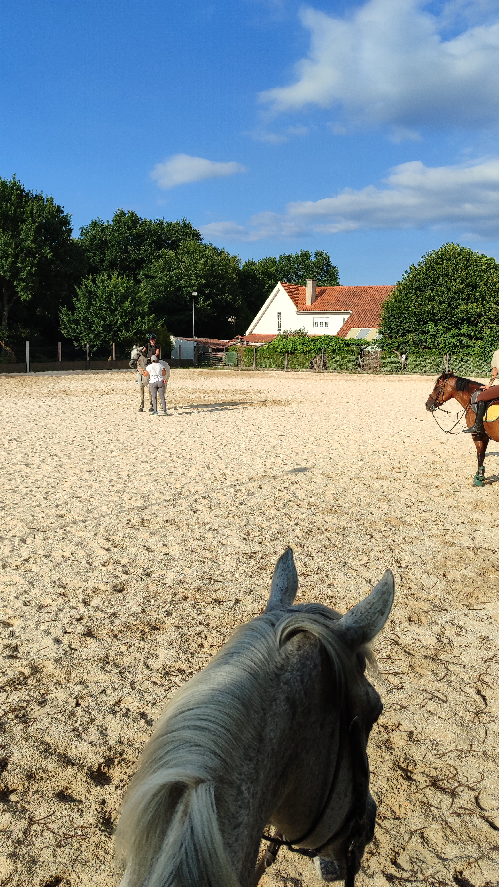

Quiénes somos
Somos un grupo de aficionados, amantes y profesionales del mundo ecuestre que creemos en un vínculo
sincero entre humanos y caballos.
Somos un proyecto colectivo, donde cada persona —y cada
caballo— importa. Queremos fomentar una comunidad donde cualquier persona se sienta bienvenida,
cuidada y escuchada.
Cada caballo tiene su propia historia, su carácter, sus cuidados y sus tiempos. Nos gusta respetarlos,
conocerlos y crear con ellos una conexión de confianza, calma y respeto mutuo.
Eso define
nuestra forma de ser y de trabajar en cada día en el centro.
Además de cuidar a nuestros caballos, nos gusta unir a las personas. Creemos que, cuando compartes la misma pasión, se crea algo especial. Por eso fomentamos un ambiente donde es fácil conocerse, charlar, compartir experiencias y construir amistades reales.
Si todo esto te suena bien, ¡acércate a conocernos!
¿Qué encontrarás en el centro?
Un lugar de encuentro donde personas con intereses similares pueden conectar,
aprender unas de otras y disfrutar juntas del mundo ecuestre. Un sitio donde involucrarte hasta donde quieras y
puedas.
Un espacio donde la comunidad crece de manera natural: desde una conversación
espontánea a una tarde acompañando a los caballos o compartiendo una misma
afición de la mano de un café calentito (o un té, si te gusta más).



